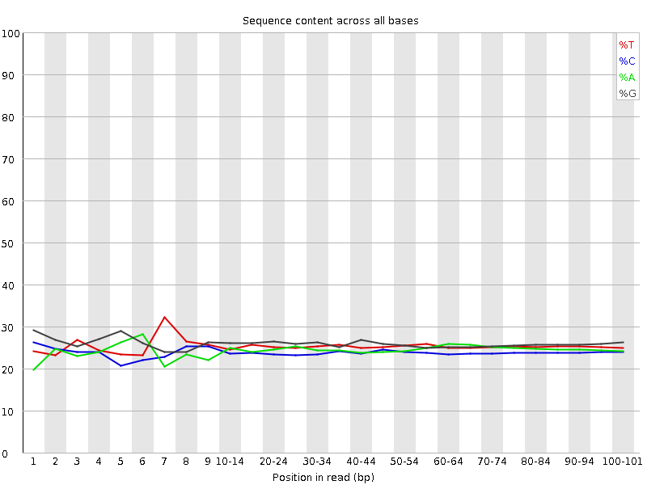
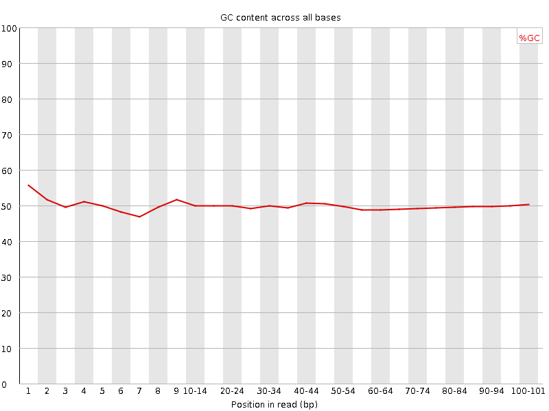
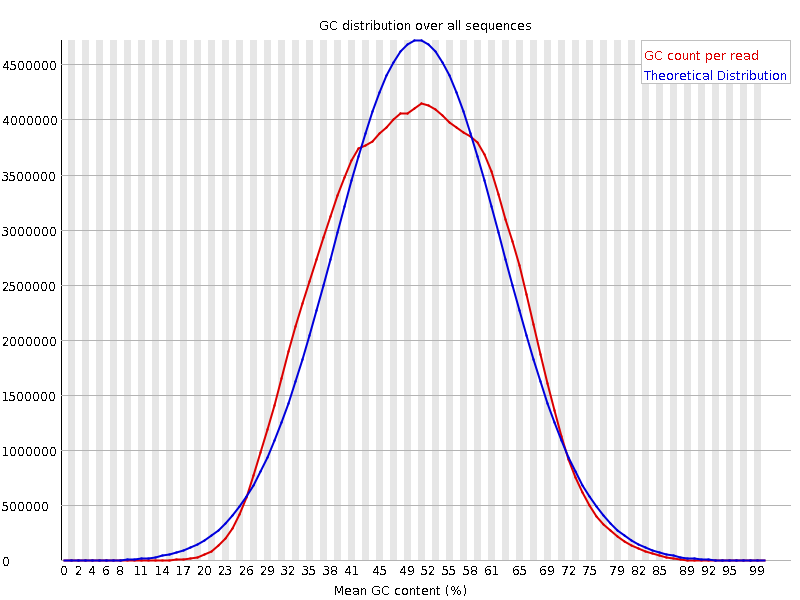
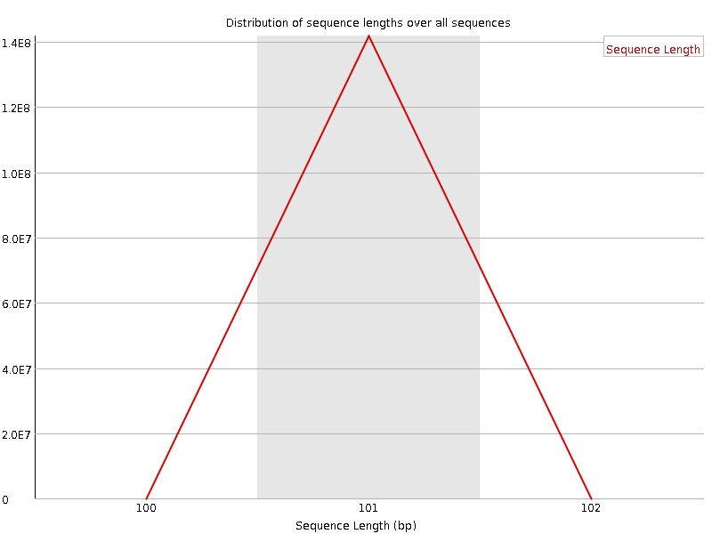
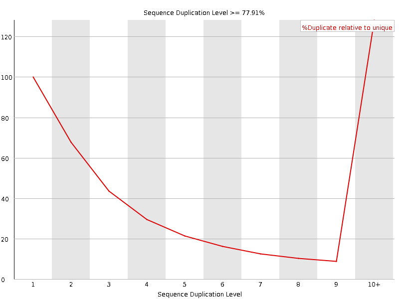
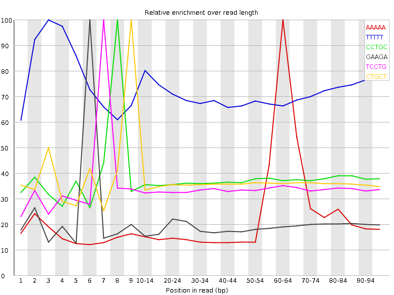

![[OK]](Icons/tick.png) Basic Statistics
Basic Statistics
| Measure | Value |
|---|---|
| Filename | SRR534294_2.fastq |
| File type | Conventional base calls |
| Encoding | Sanger / Illumina 1.9 |
| Total Sequences | 141727117 |
| Filtered Sequences | 0 |
| Sequence length | 101 |
| %GC | 49 |
Per base sequence quality

Per sequence quality scores

Per base sequence content

![[WARN]](Icons/warning.png) Per base GC content
Per base GC content

Per sequence GC content

Per base N content

Sequence Length Distribution

![[FAIL]](Icons/error.png) Sequence Duplication Levels
Sequence Duplication Levels

Overrepresented sequences
| Sequence | Count | Percentage | Possible Source |
|---|---|---|---|
| CGGCATTCCTGCTGAACCGAGATCGGAAGAGCGTCGTGTAGGGAAAGAGT | 330895 | 0.233473316189731 | Illumina Single End PCR Primer 1 (100% over 31bp) |
Kmer Content

| Sequence | Count | Obs/Exp Overall | Obs/Exp Max | Max Obs/Exp Position |
|---|---|---|---|---|
| AAAAA | 75706250 | 5.9480824 | 24.318594 | 60-64 |
| TTTTT | 61583970 | 4.2543974 | 5.944885 | 3 |
| CCTGC | 30246215 | 2.4430714 | 6.514674 | 8 |
| GAAGA | 33409080 | 2.3818204 | 12.129762 | 6 |
| TCCTG | 31008830 | 2.359448 | 6.9533997 | 7 |
| CTGCT | 28480665 | 2.167081 | 5.9541044 | 9 |
| GGAAG | 31596315 | 2.1457572 | 11.5283575 | 5 |
| GGGGG | 33633050 | 2.0725718 | 6.0582213 | 40-44 |
| AAGAG | 28604615 | 2.0392976 | 11.4857235 | 7 |
| TTCCT | 25457800 | 1.9818523 | 6.1365385 | 6 |
| TAAAA | 23852630 | 1.8264449 | 5.8524623 | 55-59 |
| TTAAA | 22927690 | 1.711022 | 5.368386 | 55-59 |
| GGGAA | 25146855 | 1.7077636 | 5.145817 | 20-24 |
| AGAGC | 22279395 | 1.6432852 | 12.632531 | 8 |
| GAGCG | 13680100 | 0.9611661 | 11.217403 | 9 |
| ATTCC | 11773505 | 0.9404401 | 5.177332 | 5 |
| CGGAA | 11202175 | 0.8262508 | 11.974738 | 4 |
| GATCG | 9759415 | 0.70154953 | 12.952241 | 1 |
| TCGGA | 9451225 | 0.6793956 | 11.02525 | 3 |
| ATCGG | 8802500 | 0.63276225 | 12.867356 | 2 |